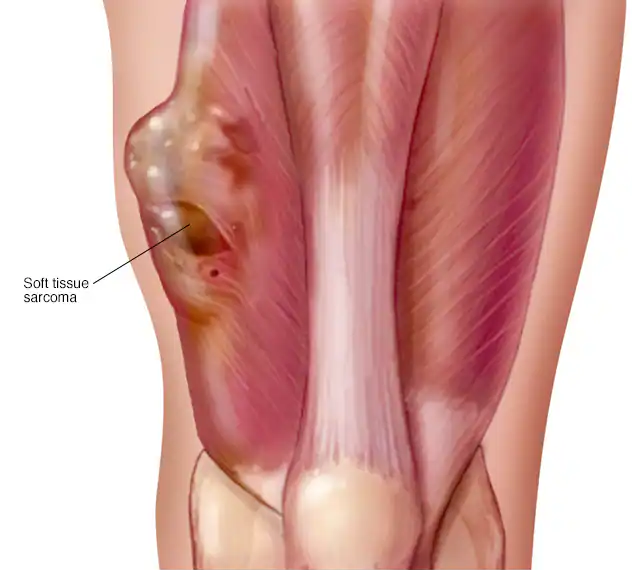

Medica Chat
Hi. This is Medica chatbot. How can I help you?
Histopathologic Cancer

Overview
Soft tissue sarcoma is a rare type of cancer that begins as a growth of cells in the body's soft tissues. Soft tissues connect, support, and surround the body's organs. Soft tissues include muscles, fat, blood vessels, nerves, tendons, and the linings of joints.
Soft tissue sarcomas can occur anywhere in the body. They most often occur in the arms, legs, and abdomen.
There are more than 50 types of soft tissue sarcomas. Some types occur more often in children, and others occur more often in adults. These cancers can be difficult to diagnose because they can be mistaken for other types of tumors.
Soft tissue sarcomas are usually treated with surgery. Other treatments may include radiation therapy and chemotherapy. Treatment depends on the size, type, location, and speed of growth of the cancer.

Types
• Synovial sarcoma
• Rhabdomyosarcoma
• Dermatofibrosarcoma protuberans
• Myxofibrosarcoma
• Angiosarcoma
• Epithelioid sarcoma
• Undifferentiated pleomorphic sarcoma
• Malignant peripheral nerve sheath tumors
• Liposarcoma
• Kaposi's sarcoma
• Leiomyoma
• Gastrointestinal stromal tumor (GIST)
• Solitary fibrous tumor
Symptoms
A soft tissue sarcoma may not cause any symptoms at first. But as the cancer grows, it may cause:
• A noticeable lump or swelling
• Pain if the growth presses on nerves or muscles
Causes
The cause of most types of soft tissue sarcoma is not known.
Soft tissue sarcoma begins when changes occur in the DNA of a connective tissue cell. A cell's DNA carries instructions that tell a cell to do what it does. These changes cause the connective tissue cell to become cancerous. These changes tell the cancer cells to grow and make more cells. Normal cells die as part of their normal cycle, but cancer cells keep growing because they don't have instructions to stop.
The cancer cells accumulate to form a tumor. In some types of soft tissue sarcoma, the cancer cells stay in one place. They continue to make more cells and cause the tumor to grow larger. In other types of soft tissue sarcoma, the cancer cells may break away from the main tumor and spread to other parts of the body.
The type of cell with the DNA changes determines the type of soft tissue sarcoma. For example, angiosarcoma begins in cells in the lining of blood vessels, while liposarcoma begins in fat cells.
Types of soft tissue sarcoma include:
• Angiosarcoma
• Dermatofibrosarcoma protuberans
• Epithelioid sarcoma
• Gastrointestinal stromal tumor
• Kaposi's sarcoma
• Leiomyosarcoma
• Liposarcoma
• Malignant peripheral nerve sheath tumor
• Myxofibrosarcoma
• Rhabdomyosarcoma
• Solitary fibrous tumor
• Synovial sarcoma
• Undifferentiated pleomorphic sarcoma
Risk factors
Factors that may increase your risk of developing sarcoma include:
• Inherited syndromes
The risk of developing soft tissue sarcoma can run in families. Genetic syndromes that increase your risk include hereditary retinoblastoma, Li-Fraumeni syndrome, familial adenomatous polyposis, neurofibromatosis, tuberous sclerosis, and Werner syndrome.
• Exposure to chemicals
Exposure to certain chemicals may increase your risk of developing soft tissue sarcoma. These chemicals include herbicides, arsenic, and dioxin.
• Exposure to radiation
Radiation therapy for other types of cancer can increase your risk of developing soft tissue sarcoma.
When to see a doctor?
Make an appointment with your health care team if you have any symptoms that worry you.